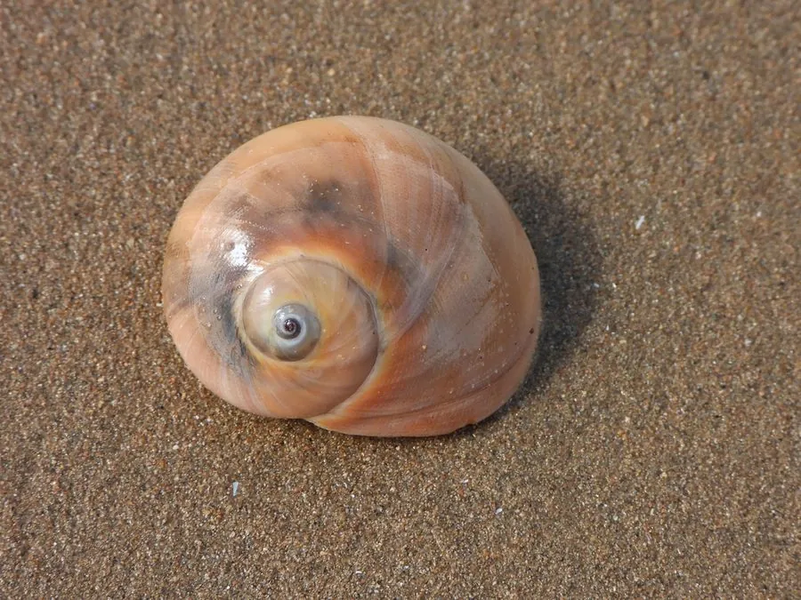

软体动物 · 动物界
扁玉螺 Neverita didyma

海边沙泥滩上常见的螺类，壳形扁圆像一轮满月，能用锉刀般的齿舌在贝壳上钻出圆孔，再吃掉里面的贝肉。
- 分类
- 门软体动物门纲腹足纲目中腹足目科玉螺科属扁玉螺属
- 栖息环境
- 潮间带至水深数十米的沙泥底质滩涂
- 地理分布
- 印度洋至西太平洋沿岸，包括中国南北沿海、日本、朝鲜半岛和东南亚
- 保护级别
- 尚无保护级别；受滩涂开发和采捕影响
物种志
扁玉螺的贝壳呈扁球形，壳高约三至五厘米，壳宽与壳高相近，螺层低平，体螺层膨大，壳面光滑，呈浅黄褐色至灰白色，常带不明显的褐色带纹，壳口宽大近半月形，口盖角质。足部特别发达，展开时能把整个贝壳包住，在沙面上滑行时几乎像一团肉在移动。它最出名的是取食方式：先用足抱住双壳类，再用齿舌和酸性分泌物在贝壳上钻出一个整齐的圆孔，然后伸入吻部刮食贝肉。
它分布于印度洋至西太平洋沿岸，包括中国南北沿海、日本、朝鲜半岛和东南亚，栖息在潮间带至水深数十米的沙泥底质滩涂，是沙滩和泥滩上最常见的螺类之一。它多在夜间活动，夏季繁殖，雌体把卵粒和沙粒粘成宽大的卵带，像一圈领子一样围在身体周围，卵带里包裹着成千上万的卵。它肉味鲜美，是沿海居民常捡拾的小海鲜，也被用作饲料和工艺品原料，目前尚无保护级别，种群受滩涂开发和采捕影响。
形态与习性
- 食性以双壳类为主，钻孔后刮食贝肉
- 壳径壳高约三至五厘米，壳形扁圆
- 取食方式用齿舌和酸性分泌物在贝壳上钻出圆孔
- 繁殖夏季产卵，卵粒与沙粘成宽大卵带
- 栖息深度潮间带至水深数十米
- 利用沿海常见小海鲜，可食并用作饲料
趣味知识
- 扁玉螺会在蛤蜊壳上钻出一个边缘整齐的圆孔，孔洞光滑得像用机器打的。
- 它的足部极大，爬行时几乎把整个贝壳包住，看上去像一团蠕动的肉。
- 繁殖时它把卵和沙粒粘成一条宽卵带围在身旁，形状像给贝壳戴了条领子。